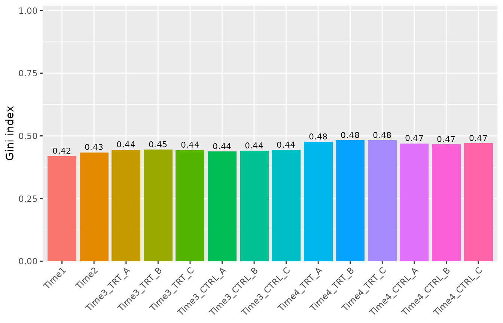
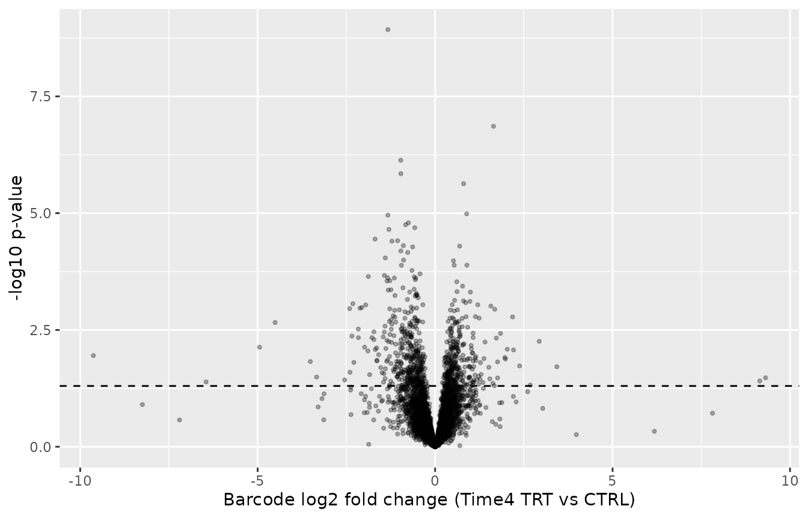
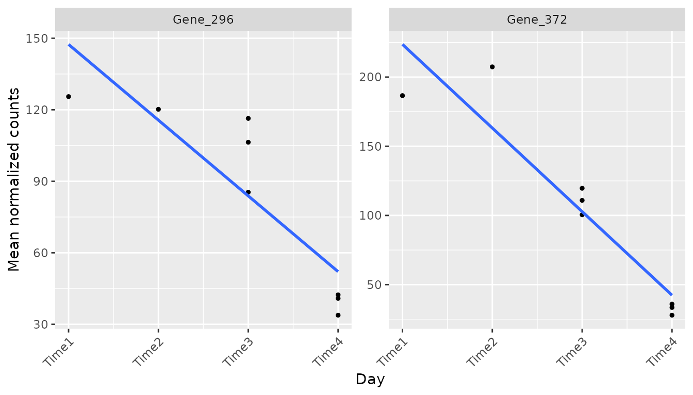
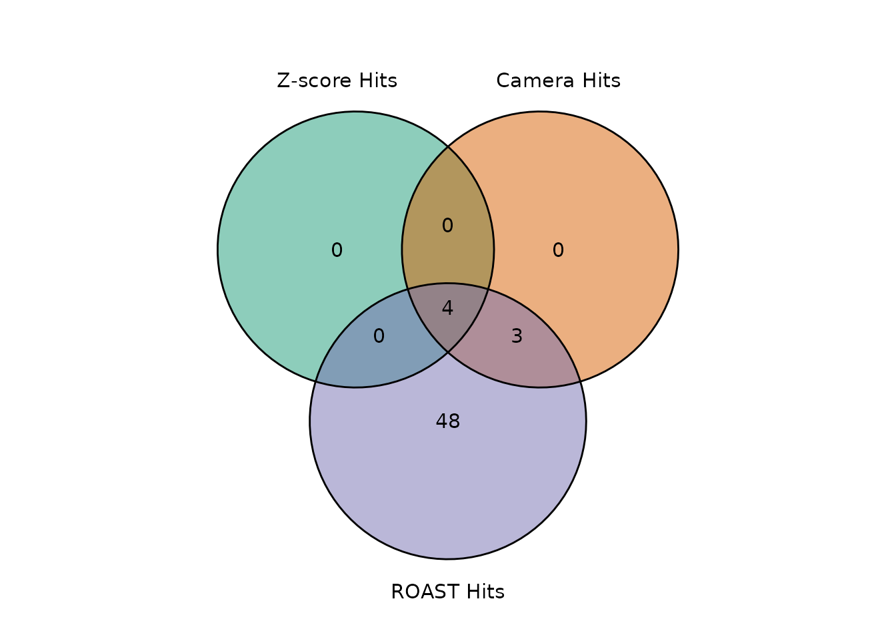

Improved statistical analysis with ScreenR
Emanuel Michele Soda
Istituto Europeo Oncologia (IEO), Milano, Italyemanuelsoda@gmail.com
Elena Ceccacci
Istituto Europeo Oncologia (IEO), Milano, Italyelena.ceccacci@ieo.it
2026-10-25
Source:vignettes/Improved_Statistics.Rmd
Improved_Statistics.RmdIntroduction
This vignette shows the statistical methods added to ScreenR in version 1.15.4 and explains why they were added. It complements the vignette ScreenR Example Analysis, which shows the complete pipeline.
| Topic | New or changed functions |
|---|---|
| Design matrix and contrasts |
create_design_matrix(),
create_contrast()
|
| Significance of CAMERA and ROAST hits |
fdr and seed arguments,
Log2FC column |
| Fold change of barcodes with zero reads |
pseudocount argument of
compute_metrics()
|
| Normalization |
method argument of normalize_data()
|
| Gene-level Z-score test | find_gene_zscore_hit() |
| Replicate-aware barcode statistics | compute_barcode_statistics() |
| One model for the whole time course | find_time_hit() |
| Combining the methods | summarise_hits() |
| Quality control |
plot_replicate_correlation(),
compute_gini(),
find_discordant_barcodes()
|
Data
We use the example dataset of the package: an shRNA chemical lethality screen with 10 barcodes for most genes, two early time points (Time1 and Time2) and treated (TRT) and control (CTRL) samples in triplicate at two later time points (Time3 and Time4).
data(count_table)
data(annotation_table)
counts <- count_table
colnames(counts) <- c(
"Barcode", "Time1", "Time2", "Time3_TRT_A", "Time3_TRT_B", "Time3_TRT_C",
"Time3_CTRL_A", "Time3_CTRL_B", "Time3_CTRL_C",
"Time4_TRT_A", "Time4_TRT_B", "Time4_TRT_C",
"Time4_CTRL_A", "Time4_CTRL_B", "Time4_CTRL_C"
)
counts <- counts %>%
mutate(Barcode = as.factor(Barcode)) %>%
filter(Barcode != "*") %>%
tibble()
groups <- factor(c(
"T1/T2", "T1/T2",
rep("Time3_TRT", 3), rep("Time3_CTRL", 3),
rep("Time4_TRT", 3), rep("Time4_CTRL", 3)
))
object <- create_screenr_object(
table = counts, annotation = annotation_table, groups = groups,
replicates = ""
)
object <- remove_all_zero_row(object)
object <- normalize_data(object)
object <- compute_data_table(object)Quality control
Replicate correlation
Replicates of the same condition should be more similar to each other
than to the other samples. plot_replicate_correlation()
shows the correlation of the log2 counts per million between all the
pairs of samples.
plot_replicate_correlation(object)
Library evenness
The Gini index measures how unevenly the reads are spread over the barcodes: 0 means all the barcodes have the same number of reads, values close to 1 mean that a few barcodes take most of the reads. In a dropout screen it usually increases over time; a strong increase or a large difference between replicates can signal a bottleneck.
compute_gini() returns the values and
plot_gini() plots them.
compute_gini(object)
#> # A tibble: 14 × 2
#> Sample Gini
#> <fct> <dbl>
#> 1 Time1 0.420
#> 2 Time2 0.434
#> 3 Time3_TRT_A 0.444
#> 4 Time3_TRT_B 0.445
#> 5 Time3_TRT_C 0.443
#> 6 Time3_CTRL_A 0.437
#> 7 Time3_CTRL_B 0.440
#> 8 Time3_CTRL_C 0.444
#> 9 Time4_TRT_A 0.477
#> 10 Time4_TRT_B 0.482
#> 11 Time4_TRT_C 0.482
#> 12 Time4_CTRL_A 0.470
#> 13 Time4_CTRL_B 0.466
#> 14 Time4_CTRL_C 0.471
plot_gini(object)
Normalization
By default normalize_data() divides by the total number
of reads of each sample (method = "cpm"). When strong hits
deplete a large part of the library, the total number of reads is a
biased measure of the sequencing depth. method = "tmm"
corrects it with the TMM normalization factors of edgeR, and
method = "control" normalizes to a set of control barcodes
(for example non-targeting shRNAs), when the library has them.
object_tmm <- normalize_data(object, method = "tmm")
# Ratio between the TMM and the total-count normalized values of each sample
# The normalized counts are the raw counts divided by the effective library
# sizes, so their ratio is the inverse ratio of the sizes
ratio <- get_normalization(object)$effective_library_size /
get_normalization(object_tmm)$effective_library_size
tibble(Sample = names(ratio), TMM_over_CPM = round(ratio, 3))
#> # A tibble: 14 × 2
#> Sample TMM_over_CPM
#> <chr> <dbl>
#> 1 Time1 0.983
#> 2 Time2 0.997
#> 3 Time3_TRT_A 0.998
#> 4 Time3_TRT_B 0.987
#> 5 Time3_TRT_C 0.998
#> 6 Time3_CTRL_A 0.983
#> 7 Time3_CTRL_B 0.982
#> 8 Time3_CTRL_C 0.992
#> 9 Time4_TRT_A 1.01
#> 10 Time4_TRT_B 1.02
#> 11 Time4_TRT_C 1.02
#> 12 Time4_CTRL_A 1.00
#> 13 Time4_CTRL_B 1.01
#> 14 Time4_CTRL_C 1.01In this dataset the two methods agree within a few percent, so we keep the default.
Design matrix and contrasts
The edgeR/limma based methods need a design matrix and a contrast. A
common pitfall is to rename the columns of
model.matrix(~ groups): model.matrix() orders
the columns alphabetically by group and the first group becomes the
intercept, so renaming them in another order silently compares the wrong
samples.
wrong <- model.matrix(~groups)
colnames(wrong) <- unique(groups)
# The column called "Time3_TRT" actually marks the Time3_CTRL samples
as.character(groups[wrong[, "Time3_TRT"] == 1])
#> [1] "Time3_CTRL" "Time3_CTRL" "Time3_CTRL"create_design_matrix() creates a design matrix with one
column for each group (no intercept) and create_contrast()
creates the comparison between groups by name, which avoids this
problem.
design <- create_design_matrix(object)
colnames(design)
#> [1] "T1.T2" "Time3_CTRL" "Time3_TRT" "Time4_CTRL" "Time4_TRT"
contrasts <- list(
Time3 = create_contrast(design,
treatment = "Time3_TRT", control = "Time3_CTRL"
),
Time4 = create_contrast(design,
treatment = "Time4_TRT", control = "Time4_CTRL"
)
)
contrasts$Time4
#> T1.T2 Time3_CTRL Time3_TRT Time4_CTRL Time4_TRT
#> 0 0 0 -1 1CAMERA and ROAST with a significance cut off
find_camera_hit() and find_roast_hit() now
return only the genes with an FDR lower or equal to fdr
(default 0.05) and report Log2FC, the median log2 fold
change of the barcodes of each gene. Previously CAMERA returned all the
genes with the requested direction (about half of the genes) and ROAST
used the raw p-value.
The p-values are one-sided for the requested
direction: camera and roast report two-sided p-values, which are twice
too large for a test of depletion only. The FDR is computed from the
one-sided p-values over all the genes, with the Benjamini-Hochberg
method or, with fdr_method = "storey", with the less
conservative Storey method when many genes have an effect.
ROAST uses random rotations: the seed argument makes the
result reproducible, and its smallest p-value is 1 / (nrot
+ 1). method = "fry" uses limma::fry(), an
exact and fast approximation of ROAST with continuous p-values. ROAST
and fry are self-contained tests (does the gene change?), while CAMERA
is competitive (does the gene change more than the others?) and becomes
conservative when many genes have an effect.
camera <- find_camera_hit(object, design, contrasts$Time4, fdr = 1)
roast <- find_roast_hit(object, design, contrasts$Time4,
nrot = 999, seed = 42, fdr = 1
)
fry <- find_roast_hit(object, design, contrasts$Time4,
method = "fry", fdr = 1
)
# Number of genes at different FDR levels
fdr_levels <- c(0.05, 0.1, 0.25)
tibble(
FDR = fdr_levels,
CAMERA = vapply(fdr_levels, function(x) sum(camera$FDR <= x), 1L),
ROAST = vapply(fdr_levels, function(x) sum(roast$FDR <= x), 1L),
fry = vapply(fdr_levels, function(x) sum(fry$FDR <= x), 1L)
)
#> # A tibble: 3 × 4
#> FDR CAMERA ROAST fry
#> <dbl> <int> <int> <int>
#> 1 0.05 0 0 9
#> 2 0.1 3 11 12
#> 3 0.25 7 55 53
head(camera)
#> # A tibble: 6 × 6
#> Gene NGenes Direction PValue FDR Log2FC
#> <chr> <dbl> <fct> <dbl> <dbl> <dbl>
#> 1 Gene_173 10 Down 0.000214 0.0882 -0.515
#> 2 Gene_422 10 Down 0.000418 0.0882 -0.433
#> 3 Gene_296 10 Down 0.000495 0.0882 -0.508
#> 4 Gene_352 10 Down 0.00200 0.232 -0.467
#> 5 Gene_87 10 Down 0.00250 0.232 -0.436
#> 6 Gene_370 10 Down 0.00295 0.232 -0.344The treatment effect in this example dataset is weak: at Time4 there are 0 genes at an FDR of 5% with CAMERA, 0 with ROAST and 9 with fry; at an FDR of 25% there are 7, 55 and 53.
A gene-level test for the Z-score
Why a new test
find_zscore_hit() calls a gene a hit when more than
number_barcode of its barcodes have a Z-score below the
median Z-score. By definition half of all barcodes are below the median,
so for a gene without any effect the number of such barcodes is binomial
with probability 0.5. With 10 barcodes and
number_barcode = 6 the probability of being called a hit by
chance is
pbinom(6, size = 10, prob = 0.5, lower.tail = FALSE)
#> [1] 0.171875so about 17% of the genes without any effect are called hits.
The test
find_gene_zscore_hit() computes for each gene a score,
the mean (or, with statistic = "median", the median) of the
Z-scores of its barcodes, and compares it with the scores of many random
sets of barcodes of the same size (n_permutations, default
100000). The p-value is the proportion of random sets with a score at
least as extreme. This permutation test makes no assumption on the
distribution of the Z-scores and gives continuous, well-calibrated
p-values. The random barcodes are drawn from the whole library (default)
or only from control genes (control_genes). Controls remove
the true hits from the reference, but they must behave like genes
without effect: in shRNA screens the non-targeting shRNAs often do not
(targeting shRNAs are usually somewhat depleted compared with them), and
in the K562 screen distributed with ScreenR they made hundreds of
non-essential genes look like hits. Use them only after checking them,
for example against known non-essential genes. The p-values are
corrected with the Benjamini-Hochberg (or Storey) method.
The random sets of barcodes assume that the barcodes of a gene
without effect behave like barcodes taken at random. They often vary
together (similar knockdown, same region of the genome), so the scores
of the genes without effect vary more than those of random sets: in the
K562 screen, with the non-essential genes as controls, 20% of the other
non-essential genes had a p-value below 0.05.
reference = "empirical" compares the gene scores with an
empirical null estimated from the centre of the distribution of the gene
statistics instead, which includes this variation and is not widened by
the hits; plot_empirical_null() shows the fit. In the
benchmarks it kept the false positives at or below the nominal rate in
the HAP1 CRISPR and K562 shRNA screens and, in the genome-wide HAP1
screen, found 90% of the core essential genes against 58% with the
default reference.
The log2 fold changes are now computed with a pseudocount
(compute_metrics(pseudocount = 0.5), in counts per
million), so barcodes with zero reads in the treated samples get a
finite fold change instead of about -23, which would distort the
Z-scores of all the other barcodes.
metrics <- compute_metrics(object,
control = "CTRL", treatment = "TRT", day = "Time4"
)
range(metrics$Log2FC)
#> [1] -4.384243 4.224517
gene_zscore <- find_gene_zscore_hit(metrics, fdr = 1, seed = 1)
head(gene_zscore)
#> # A tibble: 6 × 6
#> Gene NBarcodes Score Log2FC PValue FDR
#> <chr> <int> <dbl> <dbl> <dbl> <dbl>
#> 1 Gene_364 12 -1.55 -0.473 0.00001000 0.00534
#> 2 Gene_296 10 -1.31 -0.499 0.000440 0.117
#> 3 Gene_322 10 -1.13 -0.386 0.00159 0.283
#> 4 Gene_419 10 -1.08 -0.311 0.00217 0.290
#> 5 Gene_352 10 -1.02 -0.455 0.00326 0.348
#> 6 Gene_422 10 -0.951 -0.430 0.00482 0.429
c(
old_rule_hits = nrow(find_zscore_hit(metrics, number_barcode = 6)),
gene_test_FDR_0.25 = sum(gene_zscore$FDR <= 0.25)
)
#> old_rule_hits gene_test_FDR_0.25
#> 97 2Replicate-aware barcode statistics
compute_metrics() averages the replicates before
computing the fold change, so a barcode that is noisy across replicates
counts as much as a consistent one.
compute_barcode_statistics() tests each barcode with the
edgeR quasi-likelihood F-test, which uses the variability between
replicates, and reports a signed Z-score that can be used with
find_gene_zscore_hit().
barcode_statistics <- compute_barcode_statistics(
object, design, contrasts$Time4
)
head(barcode_statistics)
#> # A tibble: 6 × 8
#> Barcode Gene Log2FC logCPM F PValue FDR Zscore
#> <chr> <chr> <dbl> <dbl> <dbl> <dbl> <dbl> <dbl>
#> 1 10208 Gene_380 0.109 8.56 0.438 0.510 0.835 0.658
#> 2 10502 Gene_380 -0.480 4.97 0.748 0.390 0.765 -0.859
#> 3 10796 Gene_380 -0.665 6.61 2.49 0.120 0.515 -1.56
#> 4 11089 Gene_380 -0.169 8.44 0.992 0.323 0.716 -0.988
#> 5 11382 Gene_380 -0.651 5.62 1.44 0.235 0.643 -1.19
#> 6 11675 Gene_380 -0.286 9.66 6.71 0.0119 0.219 -2.51
gene_zscore_edger <- find_gene_zscore_hit(barcode_statistics, fdr = 1,
seed = 1)
head(gene_zscore_edger)
#> # A tibble: 6 × 6
#> Gene NBarcodes Score Log2FC PValue FDR
#> <chr> <int> <dbl> <dbl> <dbl> <dbl>
#> 1 Gene_173 10 -1.58 -0.521 0.000240 0.128
#> 2 Gene_422 10 -1.45 -0.451 0.000700 0.187
#> 3 Gene_15 10 -1.37 -0.321 0.00131 0.233
#> 4 Gene_296 10 -1.31 -0.493 0.00187 0.250
#> 5 Gene_370 10 -1.24 -0.394 0.00304 0.280
#> 6 Gene_168 10 -1.21 -0.256 0.00355 0.280
ggplot(barcode_statistics, aes(x = Log2FC, y = -log10(PValue))) +
geom_point(alpha = 0.3, size = 0.8) +
geom_hline(yintercept = -log10(0.05), linetype = "dashed") +
labs(
x = "Barcode log2 fold change (Time4 TRT vs CTRL)",
y = "-log10 p-value"
)
One model for the whole time course
Analysing each time point separately answers “is there an effect at
Time3?” and “is there an effect at Time4?”. find_time_hit()
answers “does the effect of the treatment change over time?” with a
single model, log(abundance) = a + b * time + d * treated + c * time *
treated. The untreated and the treated samples each follow their own
line over the time points (treated as equally spaced); c is the
difference between the two slopes, i.e. how much the treatment effect
changes per time point, and is 0 when the effect is constant. The
coefficient c is tested for the barcodes of each gene with CAMERA. The
early time points can be added as untreated baseline samples, so that
the untreated line is estimated from four time points.
time_hit <- find_time_hit(object,
treatment = "TRT", control = "CTRL",
baseline = c("Time1", "Time2"),
days = c("Time1", "Time2", "Time3", "Time4"),
fdr = 1
)
head(time_hit)
#> # A tibble: 6 × 6
#> Gene NGenes Direction PValue FDR Log2FC
#> <chr> <dbl> <fct> <dbl> <dbl> <dbl>
#> 1 Gene_372 12 Down 0.000000157 0.0000836 -0.974
#> 2 Gene_296 10 Down 0.000000706 0.000135 -1.17
#> 3 Gene_364 12 Down 0.000000760 0.000135 -1.01
#> 4 Gene_412 10 Down 0.000112 0.0149 -0.815
#> 5 Gene_370 10 Down 0.000565 0.0604 -0.389
#> 6 Gene_349 10 Down 0.00376 0.318 -0.192The column Log2FC is the median over the barcodes of the
gene of c, the change of the treatment log2 fold change per time point.
The top genes can be inspected with plot_trend().
plot_trend(object,
genes = time_hit$Gene[1:2], group_var = c("Time1", "Time2", "TRT"),
nrow = 1, ncol = 2
) +
theme(axis.text.x = element_text(angle = 45, hjust = 1))
Combining the methods
The overlap between the hits of the three methods can be shown with
plot_common_hit(). Here each list contains the genes with
an FDR of at most 25% (for the Z-score, the replicate-aware gene-level
test).
alpha <- 0.25
plot_common_hit(
hit_zscore = filter(gene_zscore_edger, FDR <= alpha),
hit_camera = filter(camera, FDR <= alpha),
hit_roast = filter(roast, FDR <= alpha),
show_elements = FALSE, show_percentage = FALSE
)
find_common_hit() returns the genes in the intersection.
summarise_hits() also shows how strongly each gene is
supported: it puts the FDR of each method in one table and adds
MaxFDR, the largest of them, which can be used as a
conservative score to rank the genes supported by all the methods. Since
an FDR is never smaller than the corresponding p-value,
MaxFDR <= alpha means that the gene has a p-value of at
most alpha in every method: for each single gene this is a
level-alpha test, whatever the dependence between the
methods. The list of genes with MaxFDR <= alpha does
not, however, have a guaranteed false discovery rate, because the false
discoveries of the single methods can concentrate in their intersection:
treat it as a short list to validate.
summary <- summarise_hits(
list(
zscore = gene_zscore_edger, camera = camera,
roast = roast, time = time_hit
),
fdr = alpha
)
head(summary, 10)
#> # A tibble: 10 × 8
#> Gene FDR_zscore FDR_camera FDR_roast FDR_time NMethods MaxFDR Hit
#> <chr> <dbl> <dbl> <dbl> <dbl> <dbl> <dbl> <lgl>
#> 1 Gene_296 0.250 0.0882 0.0534 0.000135 4 0.250 TRUE
#> 2 Gene_370 0.280 0.232 0.111 0.0604 3 0.280 FALSE
#> 3 Gene_349 0.390 0.263 0.0668 0.318 1 0.390 FALSE
#> 4 Gene_352 0.280 0.232 0.157 0.508 2 0.508 FALSE
#> 5 Gene_87 0.280 0.232 0.207 0.508 2 0.508 FALSE
#> 6 Gene_422 0.187 0.0882 0.0534 0.545 3 0.545 FALSE
#> 7 Gene_412 0.590 0.306 0.0534 0.0149 2 0.590 FALSE
#> 8 Gene_325 0.649 0.738 0.0534 0.318 1 0.738 FALSE
#> 9 Gene_173 0.128 0.0882 0.0534 0.742 3 0.742 FALSE
#> 10 Gene_168 0.280 0.380 0.153 0.742 1 0.742 FALSEIn this dataset the genes with MaxFDR <= 0.25 are:
Gene_296. The top gene of the time course model is Gene_372.
Discordant barcodes
A gene can be called a hit because of one or two barcodes with a
strong effect, for example because of off-target effects.
find_discordant_barcodes() reports the barcodes whose log2
fold change is more than threshold median absolute
deviations away from the median of their gene.
discordant <- find_discordant_barcodes(metrics, threshold = 3)
nrow(discordant)
#> [1] 280
head(discordant)
#> # A tibble: 6 × 5
#> Barcode Gene Log2FC GeneLog2FC Deviation
#> <fct> <chr> <dbl> <dbl> <dbl>
#> 1 142 Gene_343 -3.78 -0.0657 -18.1
#> 2 310 Gene_202 -2.75 0.0809 -15.4
#> 3 1038 Gene_358 -0.822 -0.0606 -13.5
#> 4 10686 Gene_177 4.22 0.139 13.5
#> 5 1033 Gene_358 -0.820 -0.0606 -13.5
#> 6 10318 Gene_21 -3.80 0.101 -12.1
# Discordant barcodes among the top genes
filter(discordant, Gene %in% head(summary$Gene, 10))
#> # A tibble: 5 × 5
#> Barcode Gene Log2FC GeneLog2FC Deviation
#> <fct> <chr> <dbl> <dbl> <dbl>
#> 1 548 Gene_352 -1.50 -0.455 -4.41
#> 2 10677 Gene_168 -0.919 -0.231 -4.31
#> 3 13132 Gene_370 0.402 -0.340 3.69
#> 4 13544 Gene_87 0.175 -0.435 3.58
#> 5 994 Gene_349 -1.61 -0.180 -3.21Session information
sessionInfo()
#> R version 4.6.1 (2026-06-24)
#> Platform: x86_64-pc-linux-gnu
#> Running under: Ubuntu 26.04.1 LTS
#>
#> Matrix products: default
#> BLAS: /usr/lib/x86_64-linux-gnu/openblas-pthread/libblas.so.3
#> LAPACK: /usr/lib/x86_64-linux-gnu/openblas-pthread/libopenblasp-r0.3.32.so; LAPACK version 3.12.0
#>
#> locale:
#> [1] LC_CTYPE=C.UTF-8 LC_NUMERIC=C LC_TIME=C.UTF-8
#> [4] LC_COLLATE=C.UTF-8 LC_MONETARY=C.UTF-8 LC_MESSAGES=C.UTF-8
#> [7] LC_PAPER=C.UTF-8 LC_NAME=C LC_ADDRESS=C
#> [10] LC_TELEPHONE=C LC_MEASUREMENT=C.UTF-8 LC_IDENTIFICATION=C
#>
#> time zone: UTC
#> tzcode source: system (glibc)
#>
#> attached base packages:
#> [1] stats graphics grDevices utils datasets methods base
#>
#> other attached packages:
#> [1] ggplot2_4.0.3 dplyr_1.2.1 ScreenR_1.15.16 BiocStyle_2.40.0
#>
#> loaded via a namespace (and not attached):
#> [1] SummarizedExperiment_1.42.0 gtable_0.3.6
#> [3] xfun_0.62 bslib_0.12.0
#> [5] htmlwidgets_1.6.4 Biobase_2.72.0
#> [7] lattice_0.22-9 vctrs_0.7.3
#> [9] tools_4.6.1 generics_0.1.4
#> [11] stats4_4.6.1 tibble_3.3.1
#> [13] pkgconfig_2.0.3 Matrix_1.7-5
#> [15] RColorBrewer_1.1-3 S7_0.2.2
#> [17] desc_1.4.3 S4Vectors_0.50.3
#> [19] lifecycle_1.0.5 compiler_4.6.1
#> [21] farver_2.1.2 stringr_1.6.0
#> [23] textshaping_1.0.5 statmod_1.5.2
#> [25] Seqinfo_1.2.0 htmltools_0.5.9
#> [27] sass_0.4.10 yaml_2.3.12
#> [29] tidyr_1.3.2 pillar_1.11.1
#> [31] pkgdown_2.2.1 jquerylib_0.1.4
#> [33] DelayedArray_0.38.2 cachem_1.1.0
#> [35] limma_3.68.5 abind_1.4-8
#> [37] nlme_3.1-169 tidyselect_1.2.1
#> [39] locfit_1.5-9.12 digest_0.6.39
#> [41] stringi_1.8.9 purrr_1.2.2
#> [43] bookdown_0.48 splines_4.6.1
#> [45] labeling_0.4.3 fastmap_1.2.0
#> [47] grid_4.6.1 cli_3.6.6
#> [49] SparseArray_1.12.3 magrittr_2.0.5
#> [51] patchwork_1.3.2 S4Arrays_1.12.1
#> [53] utf8_1.2.6 withr_3.0.3
#> [55] edgeR_4.10.7 scales_1.4.0
#> [57] rmarkdown_2.32 XVector_0.52.0
#> [59] matrixStats_1.5.0 otel_0.2.0
#> [61] ragg_1.5.2 evaluate_1.0.5
#> [63] knitr_1.52 GenomicRanges_1.64.0
#> [65] IRanges_2.46.0 mgcv_1.9-4
#> [67] rlang_1.3.0 glue_1.8.1
#> [69] BiocManager_1.30.27 BiocGenerics_0.58.1
#> [71] jsonlite_2.0.0 R6_2.6.1
#> [73] MatrixGenerics_1.24.0 systemfonts_1.3.2
#> [75] fs_2.1.0